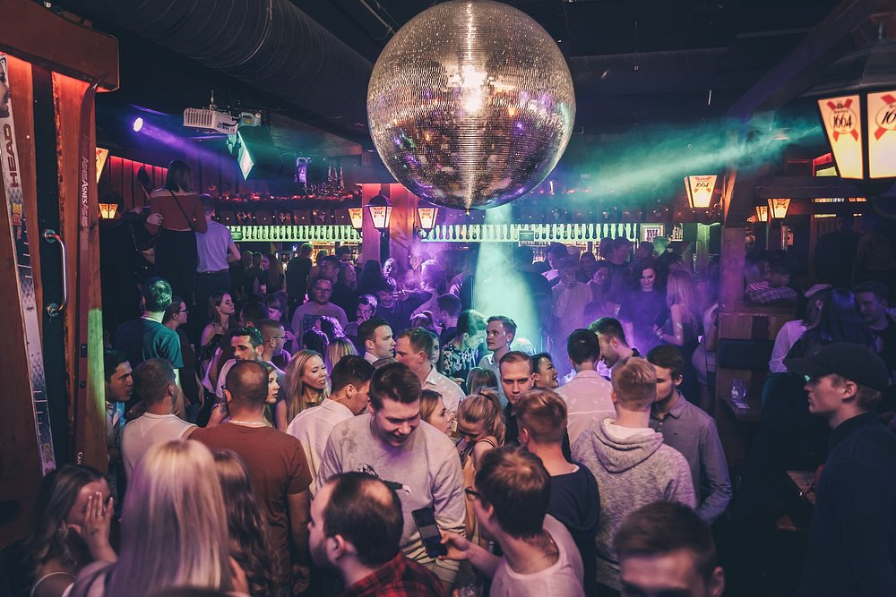

Heidi's Bier Bar
Afterski Pub - Nightclub - Lounge
Keskustassa sijaitseva kahdessa kerroksessa toimiva massiivinen
afterski- ja Oktoberfest-henkinen biletysbaari, joka tunnetaan
yhtenä Helsingin vilkkaimmista opiskelijoiden kohtaamispaikoista.
Heidi's on täysin poikkitieteellinen luottopaikka. Sinne myydään
jatkuvasti lippuja eri korkeakoulujen ja järjestöjen yhteisiin
opiskelijabileisiin (kuten suosittuihin torstaiklubi-iltoihin).
Baari toimii myös todella usein virallisena rastipaikkana ja
leimojen keräyskohteena keskustan isoissa approissa, kuten
Limeksen Approssa.
Vibe:
Erittäin vauhdikas, pöydillä tanssimista, yhteislauluja, tuoppeja ja afterski-meininkiä.
Mene nettisivulle